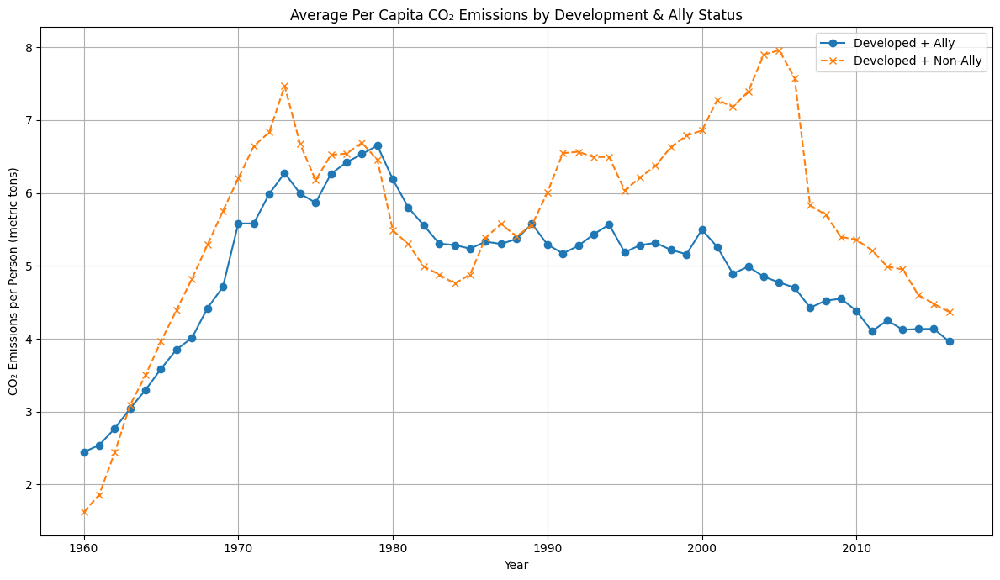

Proposition: Countries that are allies and developed will have a higher average CO2 emissions Per Capita than developed and non allied countires.
FOR the Proposition

Design Decisions and Rationale:
- Different lines for each group. I decided to use this design element as one layer of distingsion between the two groups because they are almost exactly the same with the only difference being if they are all or non ally.(2)
- Using differet markers. Another layer for distinction so that it is easier to identify which line belongs to which group making a great choice if people are color blind.(2)
- Using a line graph. I thought it would be a great way to show over time which group has remained dominant when it comes to average CO2 emssions per capita.(2)
AGAINST the Proposition
Design Decisions and Rationale:
- Different colors. A way for viewers to know which bar belongs to which group.(2)
- Bar graph. A way for viewers to instantly see the visual difference between the two groups.(1)
- Cherry picking time periods. So I can create a visualizion that has data that supports the opposite stance of my proposition.(-2)
Final Reflection
[WRITE FINAL REFLECTION PARAGRAPHS HERE.]